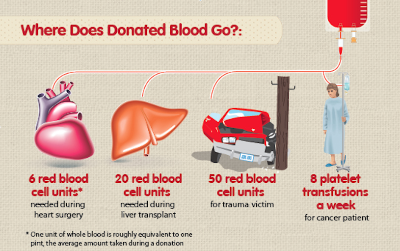
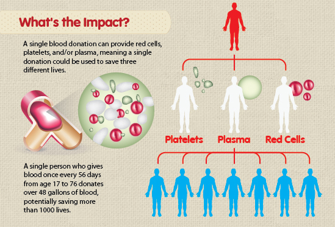

Importance of the Blood Supply
Every two seconds of every day,people around the world need blood.
It is essential for surgeries, cancer treatment,
chronic illnesses, and
traumatic injuries.
Whether a patient receives whole blood, red cells,
platelets or plasma, this lifesaving
care starts with one person making
a generous donation.
Facts About Blood Needs
- Less than 38 percent of the population is eligible to give blood or platelets.
- The average red blood cell transfusion is approximately 3 units.
- A single car accident victim can require as many as 100 units of blood.
- Blood and platelets cannot be manufactured; they can only come from volunteer donors.
- The blood type most often requested by hospitals is type O.
- One donation can potentially save up to three lives.
- People diagnosed with cancer need blood, sometimes daily, during their chemotherapy treatment.
Blood Supply Statistics
- About 118.4 million blood donations are collected worldwide. 40% of these are collected in high-income countries,
home to 16 % of the world’s population.
- 62 countries report collecting fewer than 10 donations per 1000 people. Of these, 34 countries are in the WHO
African Region, four in the WHO Region of the Americas, six in the WHO Eastern Mediterranean region,
three in the WHO European Region, six in the WHO South-Eastern Asia Region, and nine in the WHO
Western Pacific Region. All are low- or middle-income countries.
What happens to the donated blood?

what is the impact?

*Data source:
This fact sheet is based on data obtained through the WHO Global Database on Blood Safety from 108 countries
for the year 2018. To give a more complete overview of the global situation, data for the year 2017 have been
used for 40 countries and data for the year 2015 have been used for 23 countries, where current data are not
available. Overall, responses received from 171 countries cover 97.5 % of the world’s population.